15 VM's en containers in Proxmox¶
15.1 Doelstellingen¶
Na dit hoofdstuk beheerst de student het volgende:
-
de opslag van Proxmox benoemen en uitleggen waarvoor local en local-lvm dienen;
-
schijven en volumes bekijken en configureren in de webinterface;
-
een ISO-bestand downloaden en naar Proxmox uploaden;
-
een virtuele machine aanmaken en daarbij de juiste schijf, processor, geheugen en netwerkkaart kiezen;
-
uitleggen waarom nested virtualization nodig is, en die instelling activeren;
-
een virtuele machine starten, stoppen en er verbinding mee maken via de console;
-
in een virtuele machine het toetsenbord en het netwerk instellen;
-
het verschil uitleggen tussen een virtuele machine, een LXC-container en een Podman-container, en aangeven wanneer je welke kiest;
-
een containertemplate downloaden, een container aanmaken en die starten;
-
in de webinterface een snapshot nemen, terugzetten en verwijderen, en uitleggen waarom een snapshot geen back-up is;
-
in de webinterface een volledige kloon maken, een virtuele machine omzetten naar een template en er een linked clone van maken.
15.2 Virtuele machine of container?¶
Proxmox kan zowel virtuele machines als containers draaien.
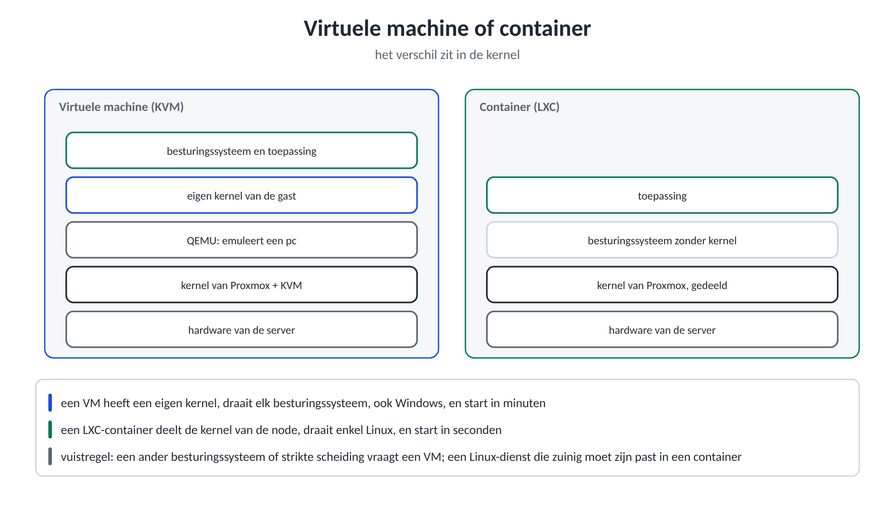
Een virtuele machine krijgt van QEMU een volledige pc voorgeschoteld: een eigen BIOS, een eigen schijf en een eigen netwerkkaart. Daarin installeer je een besturingssysteem met zijn eigen kernel. Dat kan Linux zijn, maar evengoed Windows. KVM zorgt ervoor dat die gast rechtstreeks op de processor van de server draait in plaats van nagebootst te worden.
Een container deelt de kernel van Proxmox. In de container zit enkel de rest van het besturingssysteem: de bestanden, de pakketten en de diensten. Daardoor start ze in seconden en neemt ze veel minder geheugen en schijfruimte in. De keerzijde is dat je er enkel Linux in draait, en dat de scheiding met de host minder strikt is dan bij een VM.
Let op het verschil met de containers uit de eerste hoofdstukken. Een LXC-container is een systeemcontainer: ze bevat een volledig Linux met een init-systeem, en je meldt je erop aan zoals op een server. Een Podman-container is een applicatiecontainer: ze bevat een toepassing en stopt zodra die toepassing stopt. Je kan Podman trouwens gewoon in een LXC-container draaien, en dat doen we in hoofdstuk 20.
Wanneer kies je wat?
-
een ander besturingssysteem dan Linux, bijvoorbeeld Windows: een VM;
-
een eigen kernel of eigen kernelmodules nodig, bijvoorbeeld voor een firewall of een VPN: een VM;
-
strikte scheiding, bijvoorbeeld omdat iemand anders er beheerder op wordt: een VM;
-
een Linux-dienst die snel moet starten en weinig mag kosten, zoals een webserver of een DNS-server: een container.
15.3 Opslag¶
15.3.1 Inleiding¶
Er zijn in principe twee verschillende soorten opslagtypes:
-
File level storage: opslag met een volledig bestandssysteem erop. Je kan er alles op kwijt: schijfbestanden van VM's, maar ook ISO's, containertemplates en back-ups. Local is daar een voorbeeld van, en ZFS is de meest geavanceerde variant, met ondersteuning voor snapshots en klonen.
-
Block level storage: opslag die ruwe schijven aanbiedt, zonder bestandssysteem erboven. Daar passen enkel schijfbestanden van virtuele machines en containers op, geen ISO's of back-ups. Local-lvm werkt zo.
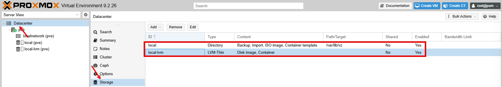
Daarnaast heb je thin en thick provisioning:
-
Bij thick provisioning wordt de volledige hoeveelheid toegewezen opslagruimte direct gereserveerd op het opslagmedium, ongeacht of deze ruimte daadwerkelijk wordt gebruikt.
-
Bij thin provisioning wordt opslagruimte dynamisch toegewezen op basis van wat daadwerkelijk wordt gebruikt, in plaats van alles vooraf te reserveren.
Hieronder zie je een tabel van mogelijke opslagtypes in Proxmox.
| Type | Gedeeld | Niveau | Thin | Snapshots |
|---|---|---|---|---|
| Directory | nee | bestand | qcow2¹ | qcow2¹ |
| BTRFS | nee | bestand | ja | ja |
| LVM | nee | blok | nee | nee² |
| LVM-thin | nee | blok | ja | ja |
| ZFS | nee | beide | ja | ja |
| NFS / CIFS | ja | bestand | qcow2¹ | qcow2¹ |
| CephFS | ja | bestand | qcow2¹ | ja |
| iSCSI | ja | blok | nee | nee |
| Ceph/RBD | ja | blok | ja | ja |
| ZFS over iSCSI | ja | blok | ja | ja |
¹ Op bestandsopslag kiest het schijfformaat: raw is thick, qcow2 is thin en laat snapshots toe.
² Sinds Proxmox VE 9 kunnen snapshots op LVM als technology preview.
De opslag kan verschillende content types ondersteunen, zoals virtual disk images, cdrom iso images, container templates of container root directories. Niet alle opslagtypen ondersteunen alle content types.
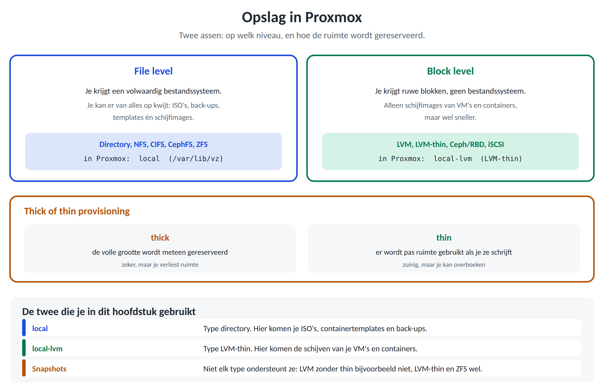
We bekijken de schijfindeling.
root@pve:~# fdisk /dev/sda
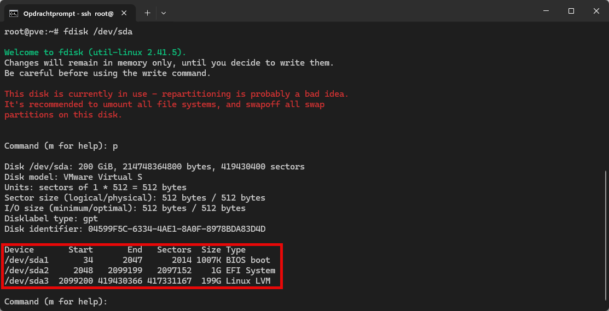
Je ziet 3 partities:
/dev/sda1: BIOS boot
Deze kleine partitie wordt gebruikt door het GRUB bootloader-systeem wanneer de server in legacy BIOS-modus (in plaats van UEFI) wordt opgestart.
/dev/sda2: EFI System. Dit is de partitie waarmee het systeem in UEFI-modus opstart. Ze bevat de bootloader en de bestanden die daarbij horen; 1 GB is daarvoor ruim voldoende.
/dev/sda3: Linux LVM
Deze partitie is gereserveerd voor LVM, wat flexibiliteit biedt bij het beheren van opslag.
Binnen deze LVM-partitie maakt Proxmox logische volumes aan voor verschillende doeleinden, zoals:
root (/) voor het besturingssysteem en de configuratie, swap als virtueel geheugen, en data voor de schijven van je VM's en containers.
We kijken wat op /dev/sda3 staat.
root@pve:~# pvdisplay /dev/sda3
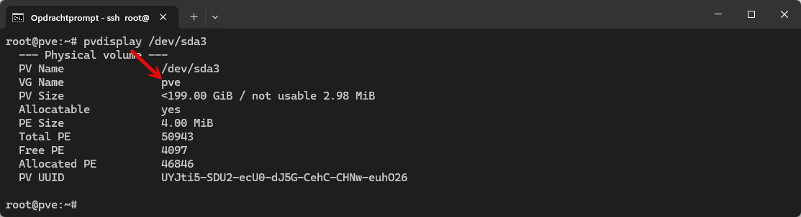
Je ziet dat dit fysieke volume tot de volumegroep pve behoort.
We vragen nu meer info op over de volumegroep pve.
root@pve:~# vgdisplay pve
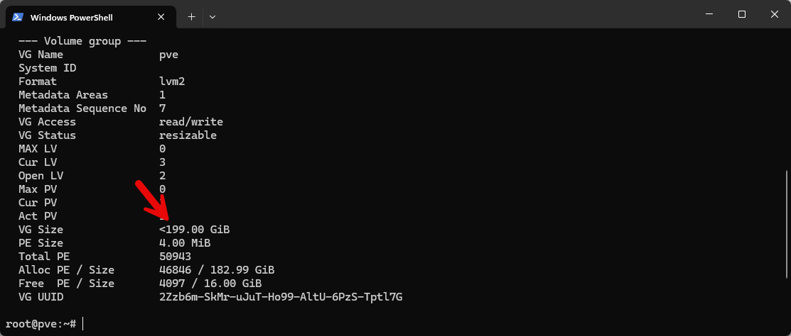
Je ziet dat de volumegroep <199GiB groot is.
We vragen nu info op over het logisch volume.
root@pve:~# lvs
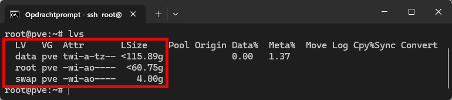
-
Data (< 115.89 GiB): Dit is de thin pool (je ziet de letter t bij attr) waarin opslag voor virtuele machines (VM’s) en containers wordt bewaard.
-
Root (< 60.75 GiB): Dit is het logische volume waarop het besturingssysteem van Proxmox draait.
-
Swap (4.00 GiB): Dit is het logische volume dat als swapruimte (virtueel geheugen) wordt gebruikt.
We kunnen meer info opvragen over /.
root@pve:~# df -h | grep /dev/mapper/pve-root
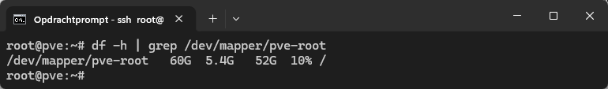
De thin pool data wordt gebruikt voor VM-schijven en containeropslag. De thin pool wordt niet gemount omdat het geen bestandssysteem bevat zoals traditionele logische volumes.
root@pve:~# mount | grep pve-data
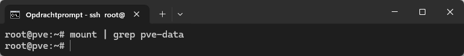
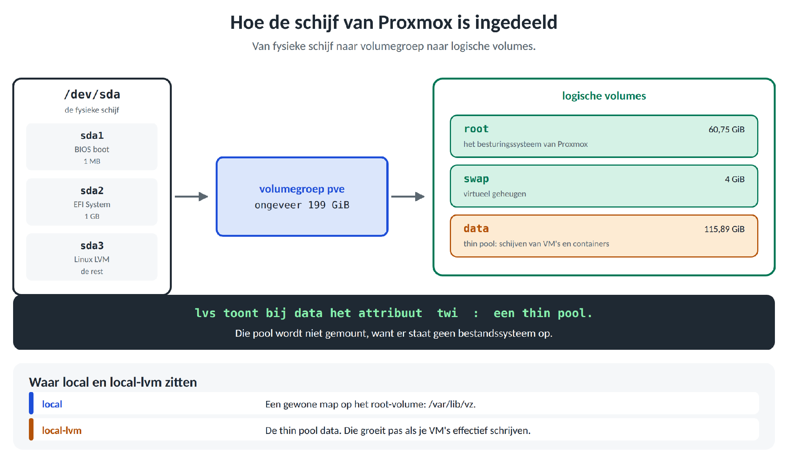
15.3.2 Configuratie schijven en volumes¶
Alle opslagconfiguraties die gerelateerd zijn aan Proxmox VE worden opgeslagen in één enkel tekstbestand op /etc/pve/storage.cfg.
root@pve:~# nano /etc/pve/storage.cfg
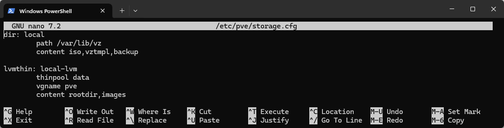
Dit bestand staat in /etc/pve en wordt daardoor automatisch naar alle nodes van het cluster gekopieerd (nu hebben we er nog maar één). Alle nodes lezen dus de opslagconfiguratie. Een opslag die maar op één node bestaat, beperk je met de optie nodes tot die node. Bijvoorbeeld:
lvmthin: local-lvm
thinpool data
vgname pve
nodes pve
Grafisch vind je info over de opslag terug bij Datacenter, Storage.
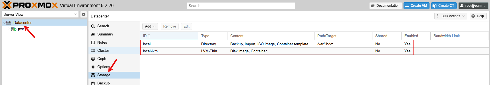
Local is een Directory (/var/lib/vz) en local-lvm is LVM-Thin.
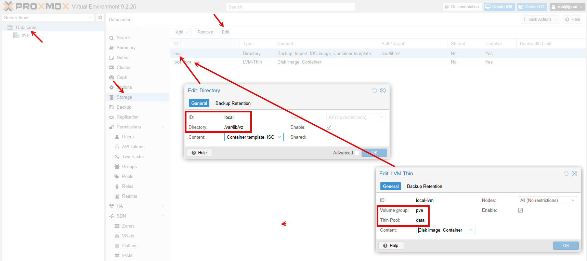
Als je local-lvm selecteert en klikt op Edit zal je zien dat je er enkel Disk image en container als content op kan zetten.
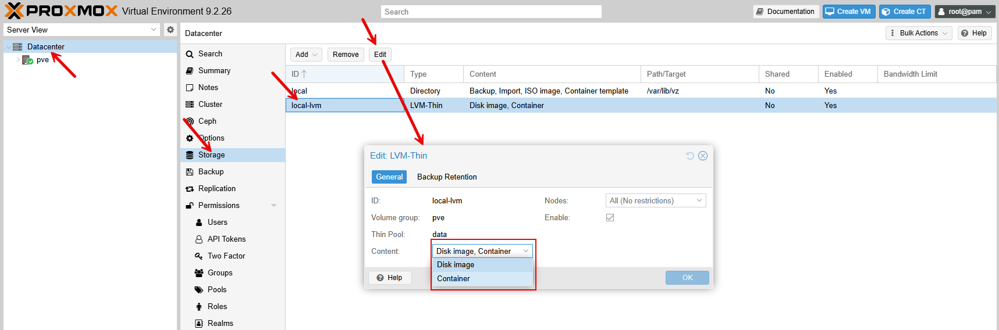
Als je local selecteert en op Edit klikt zal je zien dat je alle content erop kan zetten.
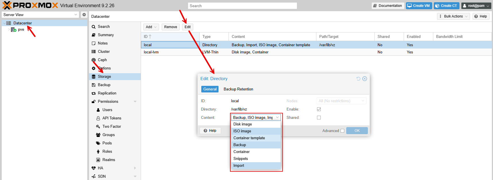
Je kan, door een item lichtblauw te maken door erop te klikken, instellen dat je dat type content wil kunnen opslaan. We passen dat nu niet aan.
Je vindt ook bij de node pve, disks de info over de schijfindeling terug.
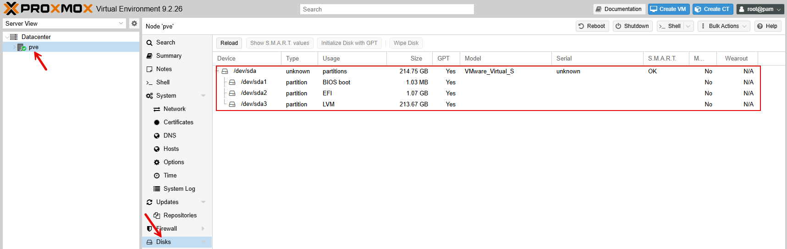
Als je eronder klikt op LVM zie je dat /dev/sda3 bijna volledig gebruikt wordt door de volumegroep pve.
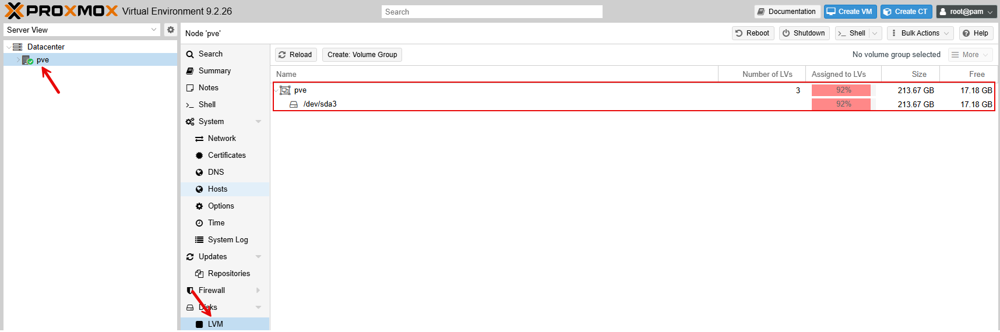
Bij LVM-Thin zie je dat het logische volume data nog geen data bevat. Dat komt omdat we nog geen containers of VM’s hebben aangemaakt.
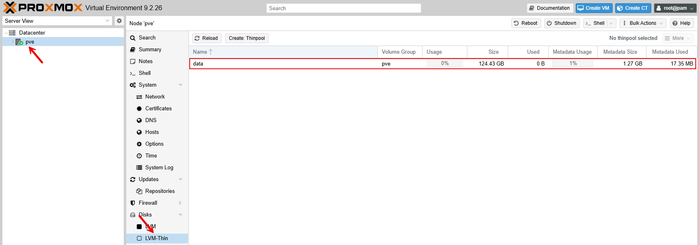
Als je klikt op Directory zie je dat dit leeg is. Je kan ook geen Directory toevoegen aangezien alle schijfruimte van /dev/sda bezet is.
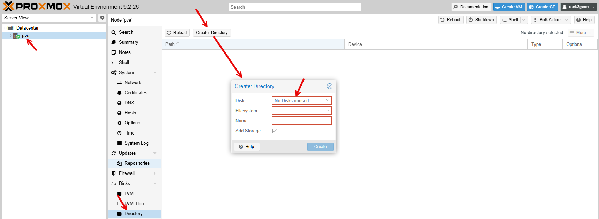
We voegen een SCSI-schijf van 1000 GB toe aan pve.
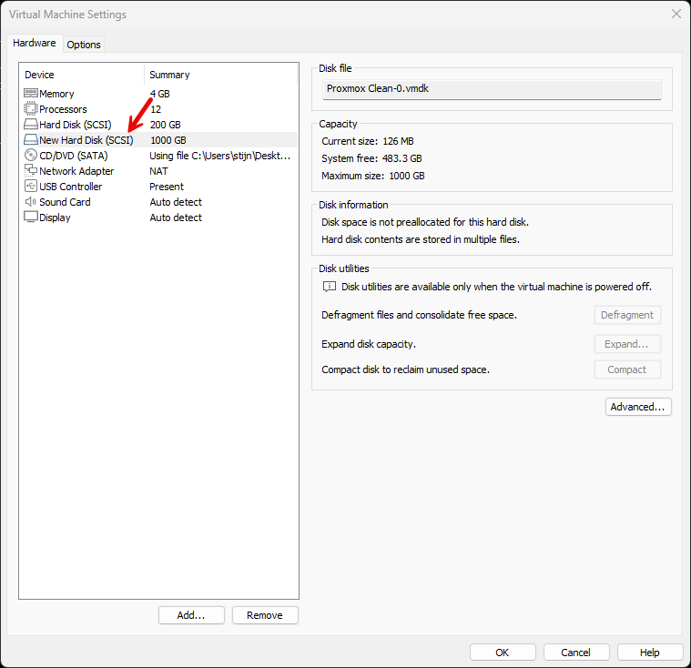
Je kan de schijf laten herkennen zonder te rebooten (dit commando moet je niet begrijpen).
root@pve:~# ls /sys/class/scsi_host/ | while read host ; do echo "- - -" > /sys/class/scsi_host/$host/scan ; done
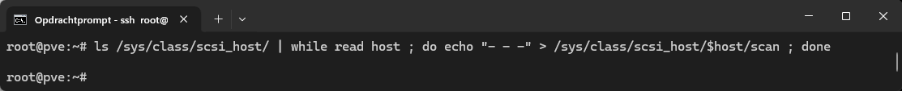
Je kan nu een ext4 of xfs filesystem gaan aanmaken zoals hieronder staat weergegeven.
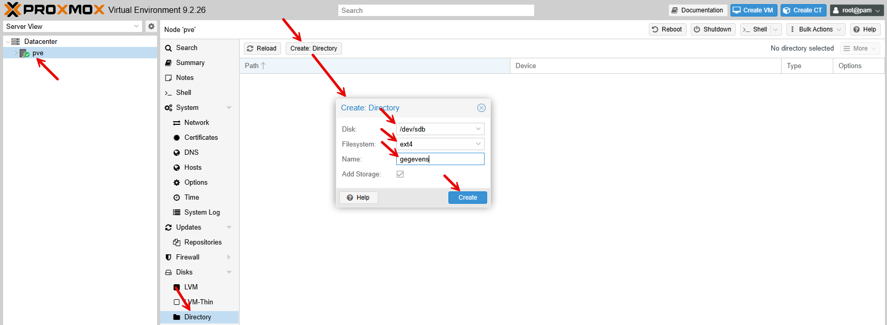
Er is nu een extra partitie aangemaakt voor het bestandsysteem.
root@pve:~# fdisk -l /dev/sdb
Disk /dev/sdb: 1000 GiB, 1073741824000 bytes, 2097152000 sectors
Disk model: VMware Virtual S
Units: sectors of 1 * 512 = 512 bytes
Sector size (logical/physical): 512 bytes / 512 bytes
I/O size (minimum/optimal): 512 bytes / 512 bytes
Disklabel type: gpt
Disk identifier: 8F9960AD-3E2C-4BCB-84B2-613CE5195151
Device Start End Sectors Size Type
/dev/sdb1 2048 2097151966 2097149919 1000G Linux filesystem
Je kan ook ZFS instellen. In onderstaand voorbeeld heb ik 2 SATA-schijven van 2000 GB toegevoegd.
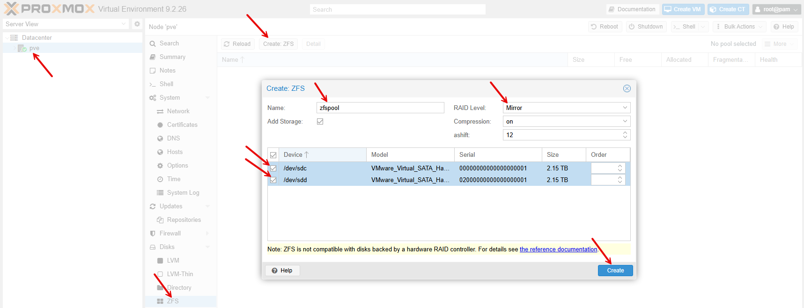
Je zal zien dat ZFS, met de huidige configuratie, enkel gebruikt kan worden voor Disk images en containers en dat het xfs-volume gebruikt kan worden voor alle content.
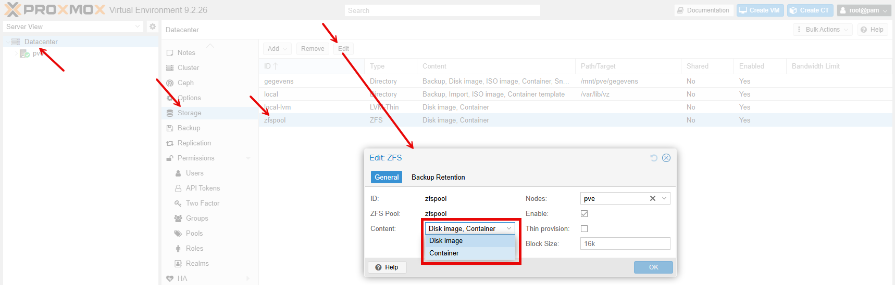
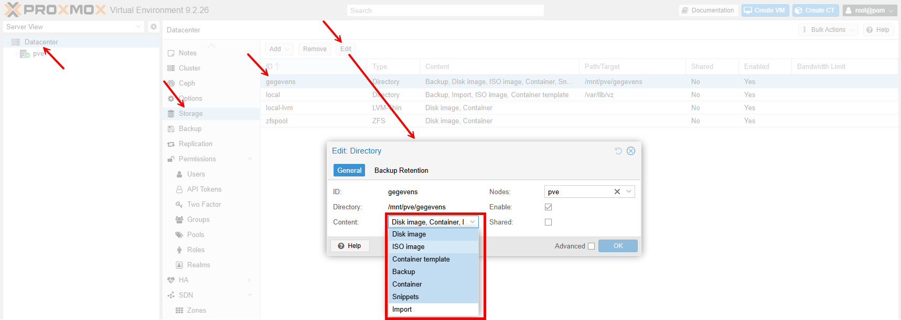
De Directory en de ZFS-pool dienden alleen om te tonen hoe je opslag toevoegt. In de rest van de cursus werken we met de standaardopslag: local voor ISO's, templates en back-ups, en local-lvm voor de schijven van VM's en containers. Zo heeft iedereen dezelfde opstelling en verwijzen de schermafbeeldingen overal naar dezelfde opslag.
Er is nog een reden. De opslagconfiguratie staat in /etc/pve/storage.cfg en gaat later naar alle nodes van het cluster. Een opslag die alleen op deze node bestaat, verschijnt op de andere nodes als niet beschikbaar en maakt het migreren van VM’s die je zou opslaan op die toegevoegde opslag moeilijker.
We verwijderen nu de zelf toegevoegde Directory en ZFS.
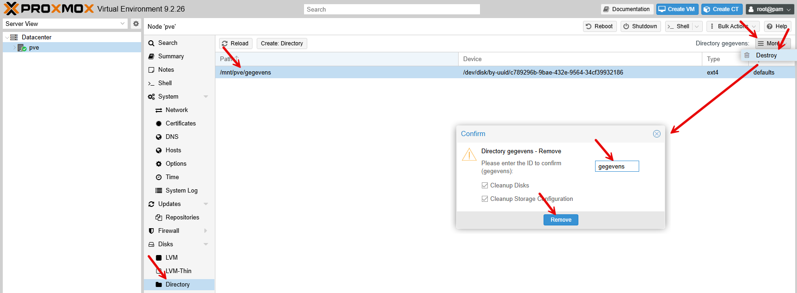
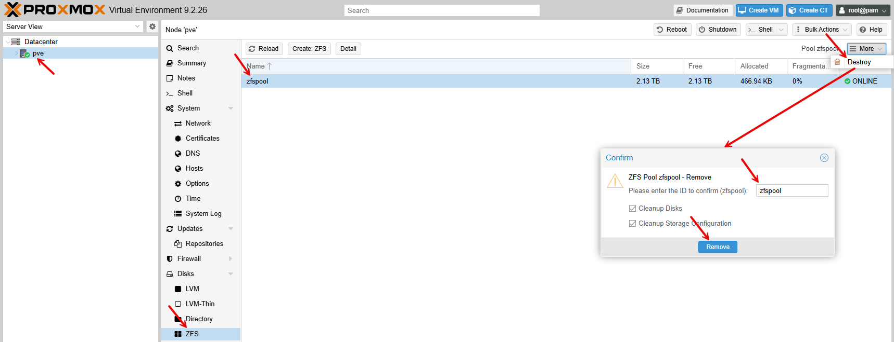
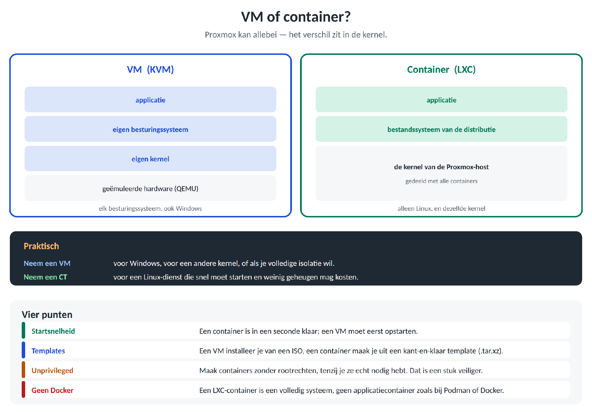
15.4 VM¶
15.4.1 ISO toevoegen voor VM¶
15.4.1.1 Download de ISO¶
We downloaden Alpine Linux van https://alpinelinux.org/downloads/ omdat Alpine Linux klein is.
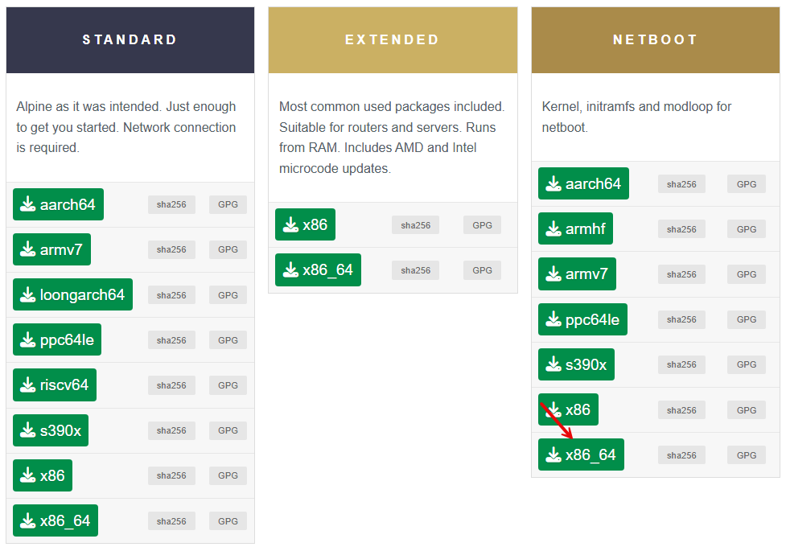
Sla de ISO op.
15.4.1.2 Upload de ISO naar Proxmox¶
We gaan nu naar Datacenter, PVE, local (pve) en kies voor ISO Images.
Klik op de knop "Upload": Klik op “Select File”, selecteer de ISO en klik op Openen.
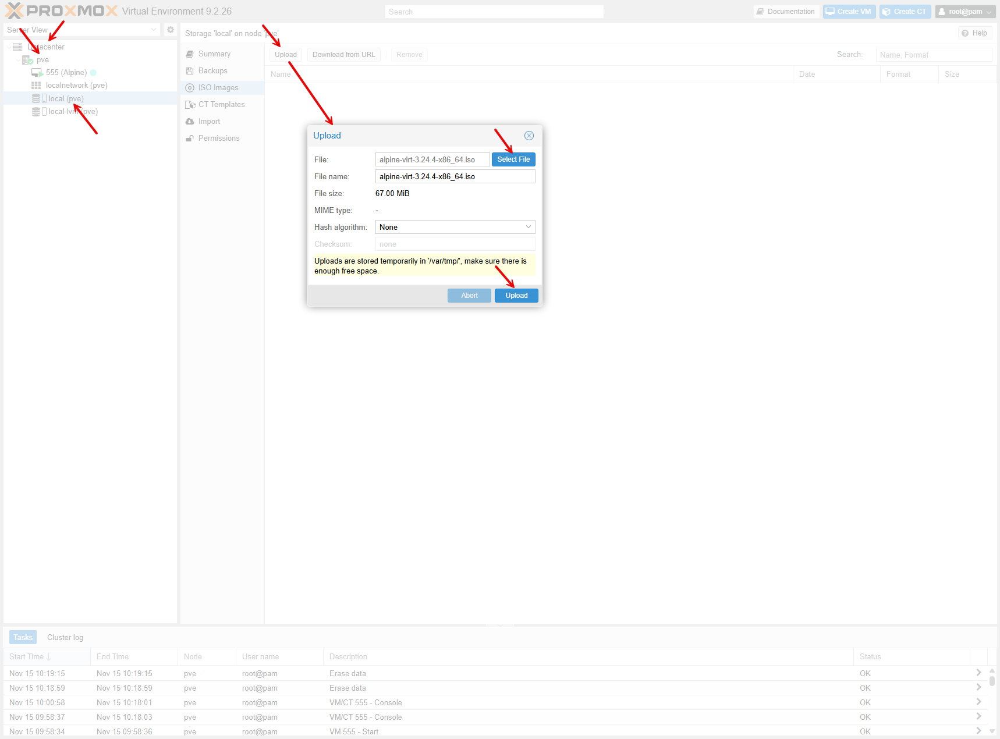
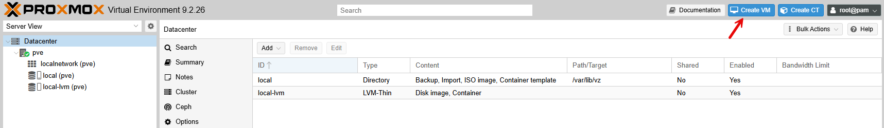
15.4.2 VM aanmaken¶
Klik op Create VM rechtsboven.
- General
Een VM ID wordt automatisch toegewezen, maar je kan ook een eigen ID invoeren (bijv. 555).
Geef een duidelijke naam, zoals Alpine.
Selecteer onderaan Advanced.
Voeg optioneel tags toe om het doel van de VM te identificeren. Bijvoorbeeld: LinuxOS.
- Meerdere tags kunnen worden toegevoegd of bestaande tags hergebruikt.
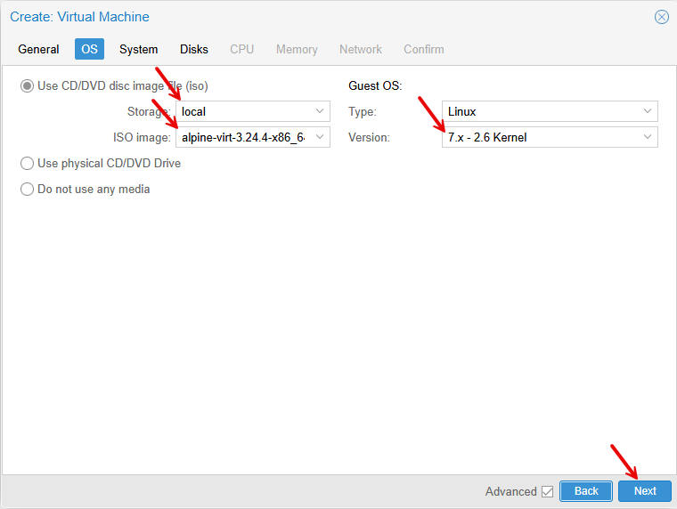
Het overige laten we staan en we klikken op Next.
- OS
Wij selecteren het ISO-image.
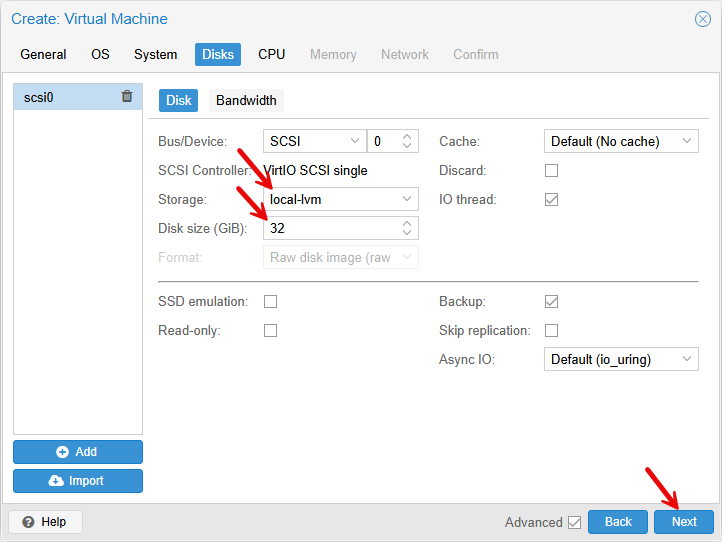
Bij versie kiezen we 7.x – 2.6 kernel.
Klik erna op Next.
- System
Laat de standaardinstellingen voor SCSI-controllers en BIOS ongewijzigd.
Wil je UEFI in plaats van het klassieke BIOS, dan stel je dat hier in. Wij laten het op de standaardwaarde (BIOS) staan en klikken op Next.
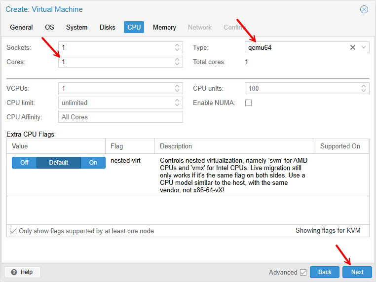
- Disks
Kies de juiste opslaglocatie, hier Local LVM (enige mogelijkheid).
Stel de schijfruimte in (bijv. 32 GB).
Laat overige instellingen standaard en klik op Next.
- CPU
Kies het aantal cores voor de virtuele CPU. Standaard wordt één core toegewezen. Het heeft weinig zin om hier iets anders te kiezen. Kies voor qemu64 bij type. We kiezen dat hier omdat we geen nested virtualization gebruiken. De installatie stopt dan meteen of de kernel start niet, met een melding als “CPU not supported”. Klik erna op Next.
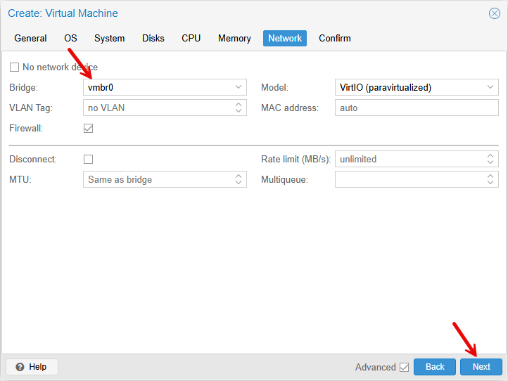
- Memory
Wijs RAM toe aan de VM. Standaard is dit 2 GB (2048 MB).
De balloon driver wordt gebruikt om geheugen dynamisch aan een virtuele machine toe te wijzen of ervan terug te nemen, afhankelijk van de behoeften van het gast- en host-systeem. Dit proces wordt "memory ballooning" genoemd. Wij kiezen voor de standaard: 2GB met een minimum van 512 MB.
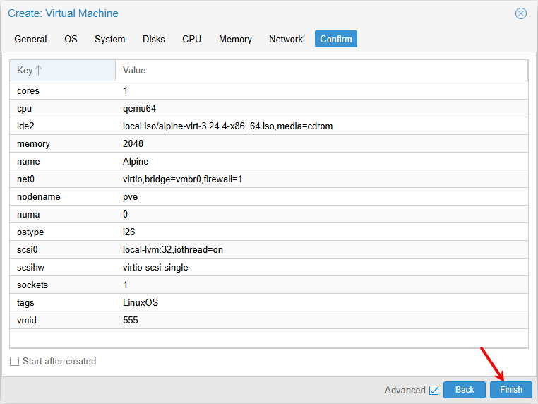
KSM staat voor Kernel Same-page Merging, een Linux-functie die geheugenoptimalisatie mogelijk maakt in virtuele machines.
We laten dit staan en klikken op Next.
- Netwerk
Selecteer de netwerkbrug (vmbr0). We hebben dit reeds uitgelegd.
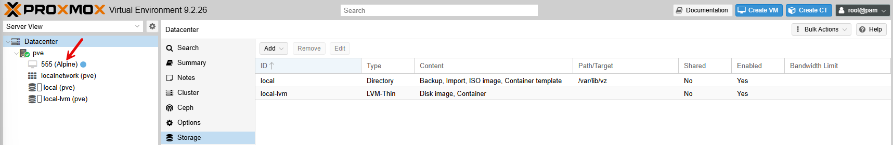
We laten de overige instellingen staan en klikken op Next.
Kijk nu je instellingen na.
Klik op Finish.
De VM wordt aangemaakt en verschijnt in de lijst onder de server pve.
15.4.3 KVM hardware virtualization¶
Omdat nested virtualization niet aanstaan dienen we bij de opties van de VM KVM hardware virtualization op uit te zetten.
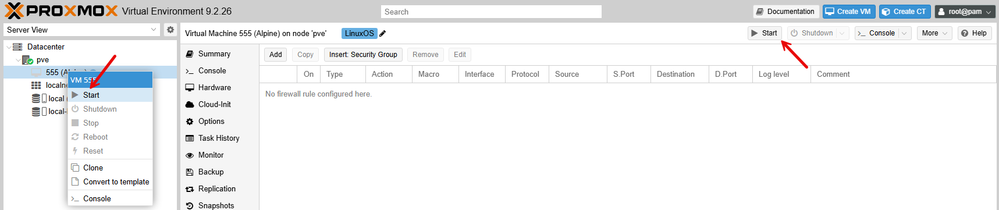
Dubbelklik op KVM hardware virtualization.
Verwijder nu het vinkje en klik uiteraard op OK.
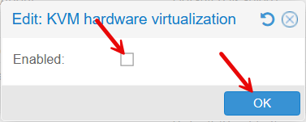
Je VM zal nu uiteraard trager draaien dan dezelfde VM met nested virtualization aan. Zonder KVM draait de VM immers in software-emulatie, wat trager en minder efficiënt is. Dit werkt enkel voor eenvoudige VM’s zoals de VM die we nu hebben ingesteld.
15.4.4 VM beheren¶
We starten de VM op door met de rechtermuisknop op de VM te klikken en te kiezen voor Start of door de VM te selecteren en Start te kiezen. De VM zal vanaf de opgegeven bron (bijv. een CD of ISO-image) booten.
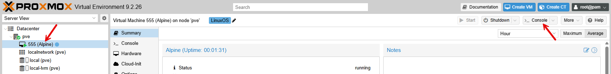
Je kan de VM uiteraard stoppen enz. nadat de VM is aangezet. Dit doe je door de VM te selecteren en rechtsboven naast Shutdown op het pijltje naar beneden te klikken. Wij laten op dit moment de VM nog draaien.
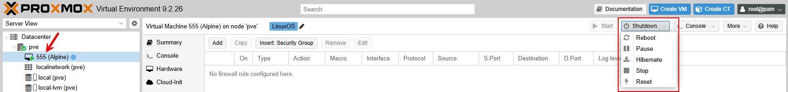
15.4.5 Verbinding maken met VM¶
Klik op Console nadat je de VM die nu is opgestart hebt geselecteerd.
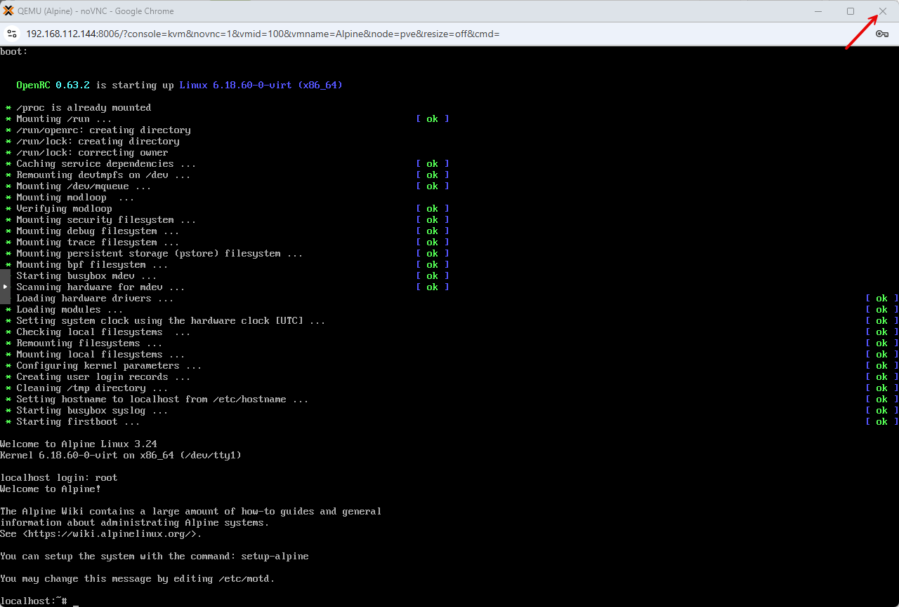
Je kan inloggen als root zonder wachtwoord in te geven.
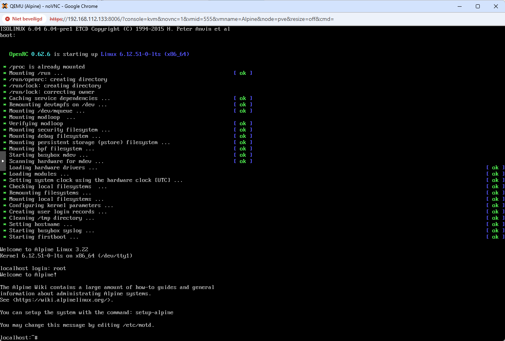
Sluit dit venster. De VM zal verder blijven draaien.
Je kan ook de Console openen voor de VM zoals hieronder staat aangegeven.
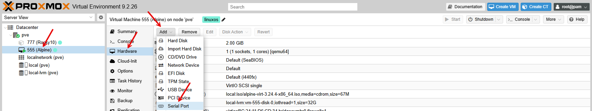
15.4.6 VM instellen¶
15.4.6.1 Instellen toetsenbord¶
Dit is uiteraard specifiek voor het besturingssysteem.
Tijdelijk kan je dit als volgt instellen (even zoeken als je een qwerty-toetsenbord niet gewend bent):
localhost:~# setup-keymap
Geef 2 keer be in.
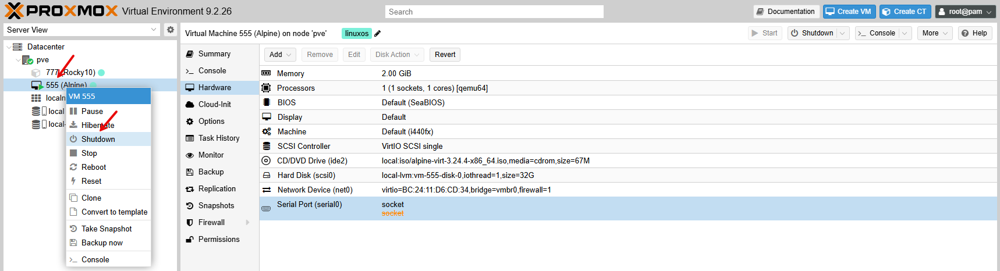
15.4.6.2 Instellen netwerk¶
We vragen de huidige netwerkconfiguratie op.
localhost:~# ip a
Je ziet dat de netwerkkaart uit (DOWN) staat. We zetten de netwerkkaart aan en vragen terug info over de netwerkkaart op.
localhost:~# ip link set eth0 up
localhost:~# ip a
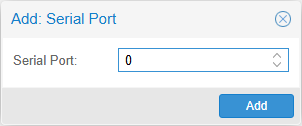
Zoals je ziet heb je nog geen IPv4-adres bekomen.
Dat komt omdat er geen DHCP-client actief is. We maken de DHCP-client actief.
localhost:~# udhcpc -i eth0
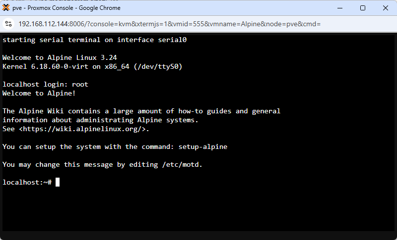
We voeren terug ip a uit.
localhost:~# ip a
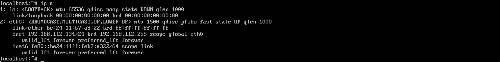
Je ziet dat ik hier 192.168.112.134/24 heb bekomen.
We hebben nu ook verbinding met het internet.
localhost:~# ping -c 2 www.google.be
15.4.7 VM afsluiten¶
Selecteer de VM en klik er met de rechtermuisknop op en kies voor Shutdown. Als alternatie klik je rechtsboven op Shutdown.
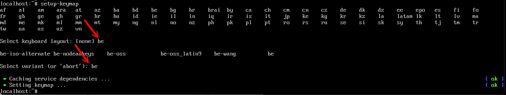
Bevestig met Yes dat je de VM wil afsluiten.
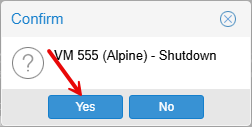
Proxmox voert Shutdown niet zelf uit: het stuurt alleen een signaal naar de VM, alsof je kort op de aan/uit-knop drukt (ACPI), of via de QEMU guest agent. Alpine reageert standaard op geen van beide, omdat het geen ACPI-daemon heeft draaien. Proxmox wacht dan tot de timeout verloopt en meldt een fout.
Je kan dat aanpassen in de VM zodat het wel werkt maar dat zou hier te ver leiden.
We sluiten de vm af in de console van de vm zelf. We gebruiken poweroff. Alpine kent het commando shutdown niet.
localhost:~# poweroff
15.5 Container¶
15.5.1 Vereisten¶
Containers vereisen de volgende configuratie:
-
Host OS: Een Linux-systeem (zoals Proxmox VE).
-
Kernel: Ondersteuning voor LXC (standaard in Proxmox).
-
Opslag: Een geschikte opslaglocatie, bijvoorbeeld ZFS, ext4, of LVM-Thin. Ook dat is reeds ingesteld.
15.5.2 Container template downloaden¶
Container templates (min of meer vergelijkbaar met images in Docker) zijn vooraf geconfigureerde basisbesturingssystemen (zoals Ubuntu, Debian, Alpine, enz.) die je gebruikt om containers te maken.
Ga naar Datacenter, pve, opslag local (pve) en klik op CT Templates, Templates.
We zoeken naar Rocky Linux en selecteren rockylinux-10-default om de template te downloaden.
Na enige tijd krijg je de melding TASK OK. Sluit dan het venster.
Hieronder vind je een vergelijking tussen een Docker image en een CT-template.
| Aspect | CT-template (Proxmox) | Docker-image |
|---|---|---|
| Type virtualisatie | OS-gebaseerde virtualisatie | Applicatiegebaseerde virtualisatie |
| Inhoud | Bevat een volledig root-bestandssysteem (zoals Debian, Alpine). | Bevat een basis-OS (bijv. alpine) met alleen de benodigde dependencies. |
| Besturingssysteem | Enkel Linux-images | Linux- en Windows-images. |
| Opslagformaat | Comprimeert een basisbestandssysteem in een .tar.gz-bestand. | Images bestaan uit lagen (layers), opgeslagen in een union filesystem. |
| Configuratie | Instellingen (CPU, RAM, netwerk) via containerconfiguratie (bijv. 101.conf). | Configuratie via Dockerfile of bij het starten met docker run. |
| Flexibiliteit | Minder flexibel: werkt alleen met volledig root-bestandssysteem. | Zeer flexibel: < meerdere lagen mogelijk, afhankelijkheden. |
| Opstarttijd | Snel, maar iets langzamer dan Docker door omvang root-bestandssysteem. | Extreem snel door lichte aard van Docker-images. |
| Opslag-efficiëntie | Minder efficiënt: elke container heeft eigen volledige root-bestandssysteem. | Efficiënt: gedeelde lagen besparen opslagruimte. |
15.5.3 Container aanmaken¶
Klik op Create CT rechtsboven.
- General
Een ID wordt automatisch toegewezen, maar je kan ook een eigen ID invoeren. Wij kiezen voor 777.
Geef een duidelijke naam, zoals Rocky10.
Voeg een tag toe die het doel van de container aangeeft. Wij kiezen voor LinuxOS.
Je moet een wachtwoord opgeven van minstens vijf tekens. Daarnaast kan je een SSH Key File laden, zodat je zonder wachtwoord kan aanmelden. Dat laten dat laatste nu ongemoeid.
Klik op Next.
- Template
Het spreekt voor zich dat we de template van Rocky Linux selecteren. We hebben immers geen andere.
We klikken erna op Next.
- Disks
We laten een schijf van 8GiB staan. De andere instellingen veranderen we ook niet.

Klik op Next.
- CPU
Bij CPU kan je weer het aantal cores instellen.
We laten dat nu onveranderd en klikken op Next.
- Memory
Je kan hier de grootte van geheugen instellen. We laten dit staan op 512 MB en klikken Next.
- Network
We verbinden de virtuele netwerkkaart met onze enige switch vmbr0. Stel in dat gebruik gemaakt wordt van DHCP.
Klik erna op Next.
- DNS
De DNS-instellingen laten we ongemoeid. We kiezen voor dus voor de instellingen van de host. Klik erna op Next.
- Confirm
Je krijgt nu een overzicht. Kijk je instellingen na. Indien correct klik je op Finish.
Na enige tijd zal je weer de melding TASK OK krijgen.

Sluit dat venster.
15.5.4 Container starten¶
Selecteer links de container Rocky10 en klik op Start.
Je kan inloggen op Rocky 10 door op Console te klikken op 1 van de 2 plaatsen zoals reeds besproken.
Log in met de user root en geef het door jouw gekozen wachtwoord in.
Je zal zien dat je toetsenbord correct staat en dat je een ip-nummer hebt bekomen.
[root@Rocky10 ~]# ip a
15.6 Snapshots en klonen¶
15.6.1 Snapshot¶
Een snapshot bevriest de toestand van een machine op een bepaald moment zoals jullie ook kennen van VMware Workstation. Loopt er daarna iets mis, dan zet je ze met een klik terug. Selecteer de VM of container en ga naar Snapshots en klik op Take Snapshot. Geef een naam en eventueel een beschrijving.
Vink Include RAM aan als je ook het werkgeheugen wil bewaren. De machine hoeft dan niet afgesloten te worden en komt terug in exact dezelfde toestand, maar de snapshot wordt wel even groot als het toegewezen geheugen.
Sluit het venster af.
15.6.1.1 Uitproberen: een wijziging terugdraaien¶
Je hebt nu een snapshot voor-update, met het werkgeheugen erbij. We doen een wijziging in de VM en draaien ze daarna terug. Open de console van 555 en maak een bestand aan:
localhost:~# echo "gemaakt na de snapshot" > /root/na-snapshot.txt
localhost:~# ls /root
na-snapshot.txt
Ga terug naar Snapshots, selecteer voor-update en klik op Rollback. Bevestig met Yes.
Kijk opnieuw in de console. De VM draait nog altijd, maar het bestand is weg: ze staat terug op het moment van de snapshot.
localhost:~# ls /root
localhost:~#
Onze Alpine-VM draait vanaf de ISO: alles wat je erin doet, staat enkel in het werkgeheugen. Zonder Include RAM zou een snapshot hier dus niets bewaren. Bij een VM die op haar schijf geïnstalleerd is, bewaart een snapshot zonder RAM wel de schijf. Na een rollback staat de VM dan uit en moet je ze opnieuw starten.
15.6.1.2 Snapshots beheren¶
Neem nog een snapshot, met als naam voor-update2. In de lijst zie je nu een boom: elke snapshot bouwt verder op de vorige, en NOW (You are here!) staat onder de snapshot waar de VM nu van vertrekt.
Selecteer voor-update2 en klik op Remove om ze te verwijderen. Met Edit pas je de beschrijving aan.
Ruim snapshots op die je niet meer nodig hebt. Zolang een snapshot bestaat, houdt de opslag alle oude blokken bij. Hoe meer en hoe oudere snapshots, hoe meer plaats ze innemen.
15.6.1.3 Snapshots van een container¶
Bij een container werkt het op dezelfde manier. Selecteer de container 777, ga naar Snapshots en klik op Take Snapshot. Geef als naam basis. Include RAM staat er niet bij: het werkgeheugen van een container kan je niet bewaren.
Open de console van de container en maak een bestand aan:
[root@Rocky10 ~]# touch /root/na-snapshot
[root@Rocky10 ~]# ls /root
na-snapshot
Selecteer de snapshot basis en klik op Rollback. Proxmox stopt de container daarvoor zelf. Start hem daarna opnieuw met Start en kijk in de console: het bestand is weg.
Snapshots werken alleen op opslag die ze ondersteunt. local-lvm (LVM-thin) kan het, local (een gewone directory) enkel met qcow2-schijven. Kijk nog eens naar de tabel bij Opslag.
Let op: een snapshot is geen back-up. Hij staat op dezelfde schijf als de machine zelf, dus bij een schijfdefect ben je allebei kwijt. Gebruik snapshots om een wijziging terug te draaien, en de back-upopdracht uit het vorige hoofdstuk om je gegevens veilig te stellen.
15.6.2 Klonen en templates¶
Met Clone maak je een kopie van een machine. Je kiest tussen twee soorten:
-
Full Clone maakt een volledige kopie. De nieuwe machine staat helemaal los van het origineel;
-
Linked Clone bewaart enkel de verschillen met het origineel. Dat gaat sneller en neemt minder plaats in, maar het origineel mag je dan niet meer verwijderen.
15.6.2.1 Een volledige kloon¶
Zet de Alpine-VM eerst uit met poweroff in haar console. Een uitgeschakelde VM klonen gaat het snelst.
Klik met de rechtermuisknop op 555 en kies Clone. Vul bij VM ID 556 in en bij Name alpine-basis. Bij Mode kan je niets kiezen: een gewone VM kan je alleen volledig klonen. Klik op Clone.
Proxmox geeft de kloon automatisch een nieuw MAC-adres. Bij een geïnstalleerd systeem moet je zelf nog de hostname aanpassen, want die staat op de schijf en is dus mee gekopieerd.
15.6.2.2 Een template maken¶
We zetten de kloon om naar een template, niet het origineel. Zo blijft 555 bruikbaar.
Klik met de rechtermuisknop op 556 en kies Convert to template. Bevestig met Yes. Het icoon verandert, en Start is niet meer beschikbaar: een template kan je niet meer starten of wijzigen.
15.6.2.3 Een linked clone¶
Klik met de rechtermuisknop op de template 556 en kies Clone. Nu kan je bij Mode wel kiezen. Kies Linked Clone, VM ID 557 en Name alpine-linked, en klik op Clone. De kloon staat er na enkele seconden.
Maak om te vergelijken nog een kloon van de template, nu met Mode Full Clone, VM ID 558 en Name alpine-full. Die duurt langer: de volledige schijf wordt gekopieerd. In hoofdstuk 16 zie je met lvs hoe de linked clone op de schijf naar de template verwijst.
15.6.2.4 De template verwijderen¶
Selecteer de template 556 en kies More, Remove. Proxmox weigert: de schijf van de template wordt nog gebruikt door de linked clone 557.
Verwijder daarom eerst 557 en 558, en daarna de template 556, telkens met More, Remove. Proxmox vraagt het ID ter bevestiging. 555 houden we, want die gebruiken we nog.
15.6.2.5 Containers klonen¶
Containers kloon je op dezelfde manier. Een draaiende container kan je niet zomaar klonen: zet 777 eerst uit met Shutdown.
Klik met de rechtermuisknop op 777 en kies Clone. Vul bij CT ID 778 in en bij Hostname rocky-kloon, en klik op Clone. Proxmox past de hostname in de kloon zelf aan.
Ook een container kan je met Convert to template omzetten naar een template. Verwijder de kloon 778 daarna weer en start 777 opnieuw.
Snapshots en klonen kan je ook vanaf de commandoregel beheren, met qm voor virtuele machines en pct voor containers. Dat doen we in hoofdstuk 16. Podman in een LXC-container draaien komt in hoofdstuk 20 aan bod.